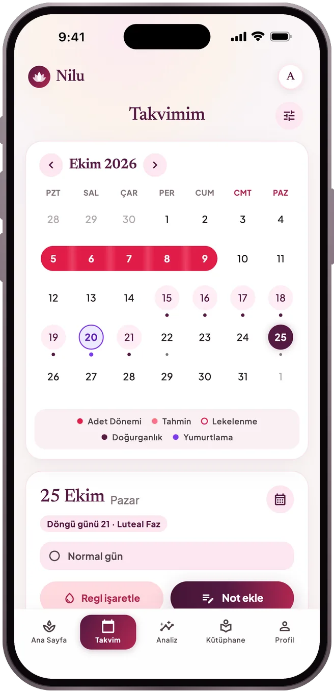
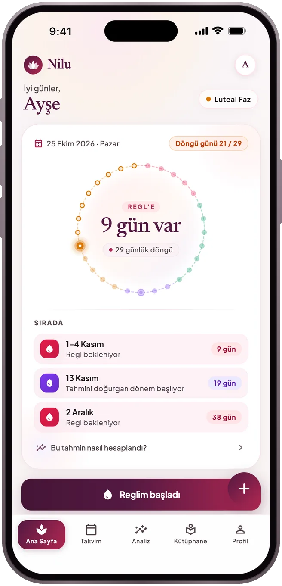
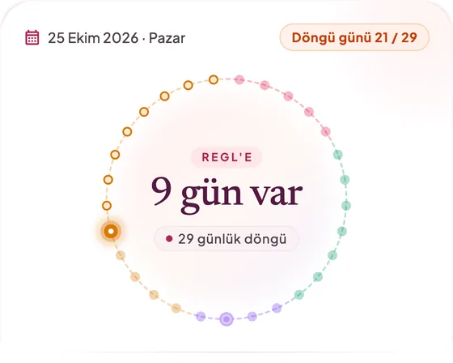
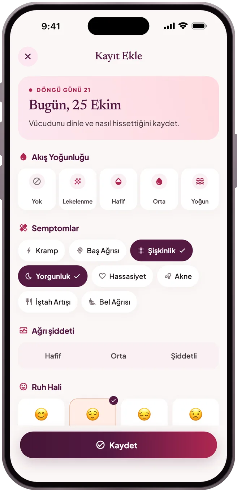
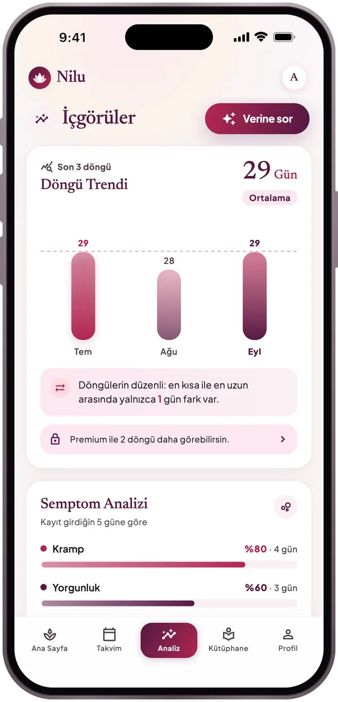
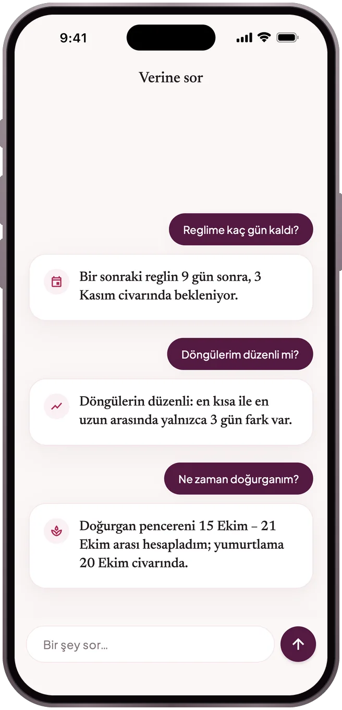
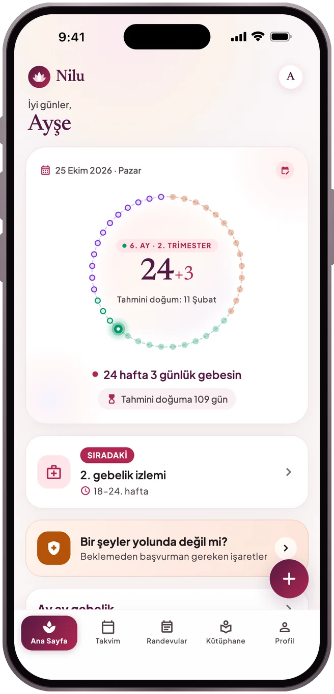
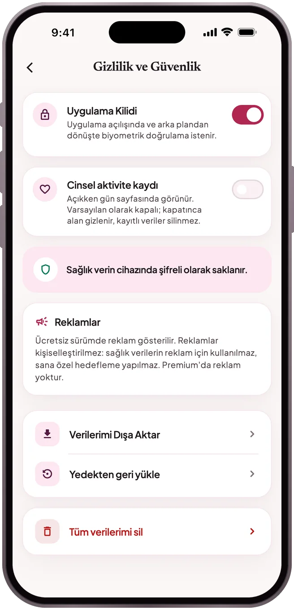

TAKVİM
Sıradaki reglin, aralığıyla birlikte
Reglini takvimde işaretle. Nilu bir sonrakini tek bir tarih yerine olası bir aralık olarak gösterir; nasıl hesaplandığını ve tahmini doğurgan dönemi de.
Regl · Gebelik · Lohusalık
Regl, gebelik ve lohusalık için sakin bir takip uygulaması. İşaretlediğin her şey telefonunda, şifreli duruyor — izleme yok.
Yakında App Store'da ve Google Play'de
Nasıl çalıştığına bak


Neler yapar
TAKVİM
Reglini takvimde işaretle. Nilu bir sonrakini tek bir tarih yerine olası bir aralık olarak gösterir; nasıl hesaplandığını ve tahmini doğurgan dönemi de.
GÜNLÜK
Akış, ağrı, ruh hâli, belirtiler ve notlar birkaç dokunuşla kayıtlı; ne zaman geriye dönüp bakmak istersen orada.

İÇGÖRÜLER
Döngülerin ne kadar sürüyor, ne kadar düzenli, hangi belirtiler sık tekrarlıyor? Bütün döngü geçmişin ve muayenede gösterebileceğin hekim özeti ücretsiz.

VERİNE SOR
“Reglime kaç gün kaldı?”, “Döngülerim düzenli mi?” diye sor. Cevaplar telefonunda, uygulamada gördüğün hesaplardan çıkar; bir yapay zekâ modeline gönderilmez ve bilmediğini uydurmaz.

GEBELİK
Gebelik ve lohusalıkta haftan ve günün, Sağlık Bakanlığı rehberine göre izlemlerin ve beklemeden başvurman gereken tehlike işaretleri bir arada.

Döngü günün ve sıradaki reglin bir bakışta; widget ve hatırlatıcılar cihazında hazırlanır.
Regl, beslenme, psikoloji ve ilişkiler üzerine kaynak gösterilen yazılar.
Yalnızca seçtiğin yakınlık durumu paylaşılır, açık rızanla.
Telefon değiştirirken kayıtlarını parolalı bir yedekle taşı ya da istersen hesabınla buluta eşitle.
Gizlilik

Telefonunda, şifreli olarak. Bulut eşitlemeyi açmadıysan hiçbir sağlık kaydın cihazından çıkmaz; partner özelliği yalnızca paylaşmayı seçtiğin yakınlık durumunu gönderir. Ayrıntılar Gizlilik Politikası'nda.
Eski telefonda Profil → Gizlilik ve Güvenlik → Verilerimi Dışa Aktar ile bir yedek al. Yeni telefonda aynı ekrandan Yedekten geri yükle ile geri yükle. Ya da Profil → Hesap ve bulut yedeği ekranında bulut eşitlemeyi aç; yeni telefonda karşılama ekranındaki "Kayıtlarımı buluttan geri yükle" ile aynı hesapla giriş yap.
Abonelikleri mağaza yönetir. iPhone'da: Ayarlar → adın → Abonelikler → Nilu. Android'de: Google Play → Profil → Ödemeler ve abonelikler → Abonelikler → Nilu. İptal, dönem sonuna kadar geçerli kalır.
Hesap açmadan başla; istersen Apple, Google ya da e-postayla giriş yapıp yedekle. Eşitlemeyi açmadıkça kayıtların telefonundan çıkmaz.
Nilu tıbbi teşhis koymaz, tedavi önermez ve bir doğum kontrol yöntemi değildir. Tahminler geçmiş kayıtlarından hesaplanır ve yaklaşıktır.